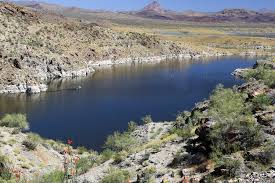

Popular Places to Fish in Arizona!
- Lake Pleasant
- Roosevelt Lake
- Apache Lake
- Alamo Lake
- Lake Powell
- Lees Ferry
- Lake Havasu
- Colorado River


Your go-to guide for fishing in Arizona!
The Palomar Knot
Here in Arizona, all four seasons can be great times to catch fish. Spring time and fall are excellent times to fish for all species of fish, as this is when the water is at a nice cool temperature, and the fish are very active. During the summer, it could be a little difficult to fish due to the intense heat and the fish moving to deeper waters to stay cool. In terms of what time of day to fish, all fishermen would have to agree during the early morning or late evening! This is when fish are most active and feeding! But all anglers should know, any time of the day is the best time to fish.
Different fish species thrive in different water conditions. Bass prefer warmer waters with a lot of cover, such as trees, rocks, or other natural obsturctions. Trout are usually in more cooler waters often in flowing waters and rivers. Alamo Lake is a great lake for bass fishing, it is well known for many record-breaking largemouth bass being caught there! Places like Woods Canyon Lake, Bear Lake, Upper Lake Mary much cooler bodies of water where trout reside in, with Upper Lake Mary being known to contain Northern Pike, an invasive species of fish.
Choosing the right bait or lure to use really depends on the species of fish you are going for. Universally, a live bait like nightcrawlers (earthworms) on a hook has been proven for millennia to be an effective way to catch fish. There are things such as soft-plastic baits, that mimic a real animal or insect, and are also very effective to fish with. It all really depends on what kind of fish you are going for and what the fishes' preferences are. Depending on the waters your fishiing, the fish will prefer a certain color bait, lure, or they may even prefer HOW a certain lure moves, if it moves like a wounded prey or not. Fish can be really picky! Below are some examples of different baits and lures:
Fish like to feel like they are safe, so they tend to gather around structures like submerged trees, rocks, and drop-offs. Whenever you're out fishing, walk along the bank, and look for any trees, big rocks, or other obstructions in the water. Here, the fish will tend to hang out, especially if it is a good spawn spot. Fish also like to hang out around really tall grass, so if you are fishing in Alamo Lake, for example, cast out where you see really tall grass in the water, there will be plenty of bass chilling in there! If fishing via boat or kayak, one thing I like to do is casting towards the shore, and reeling in. I've caught many fish casting like that!
| LICENSES | PRIVILEGES | RESIDENT | NON-RESIDENT |
|---|---|---|---|
| General Fishing 1, 2, 3 | Allows the take of all fish species statewide, including at Community Fishing waters. (1 Year) | $37 | $55 |
| Combination Hunt and Fish 1, 2, 3 | Allows take of all fish species statewide (including at Community Fishing waters), small game, fur-bearing animals, predatory animals, nongame animals, and upland game birds. (1 Year) | $57 | $160 |
| Youth Combination Hunt and Fish 1, 2, 3 (ages 10–17) | Allows take of all fish species statewide (including at Community Fishing waters), small game, fur-bearing animals, predatory animals, nongame animals, migratory birds, and upland game birds. (1 Year) | $5 | $5 |
| Short-term Combination Hunt and Fish 2, 3, 4 | Allows take of all fish species statewide (including at Community Fishing waters), small game, fur-bearing animals, predatory animals, nongame animals, and upland game birds. | $15/day | $20/day |